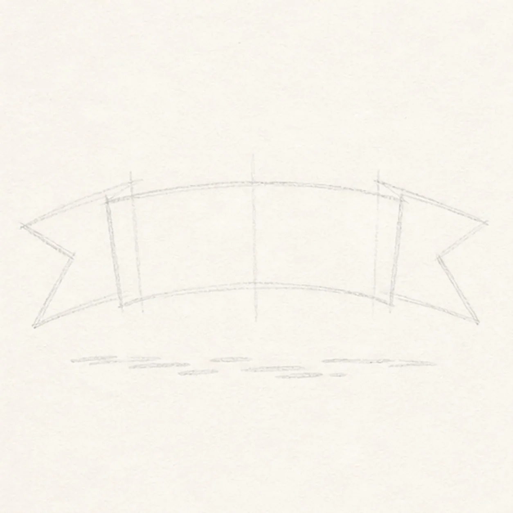
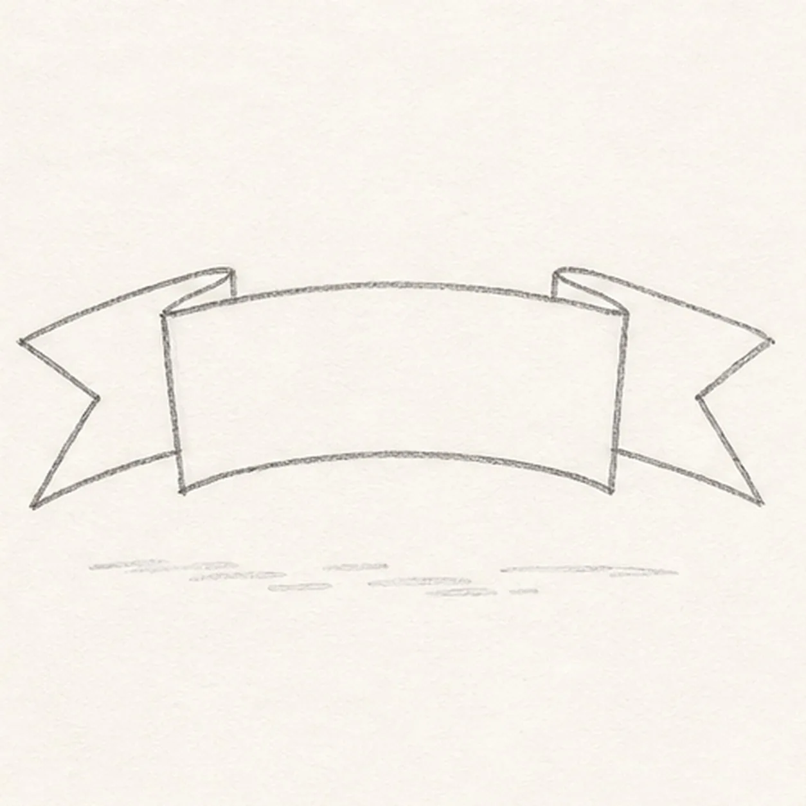
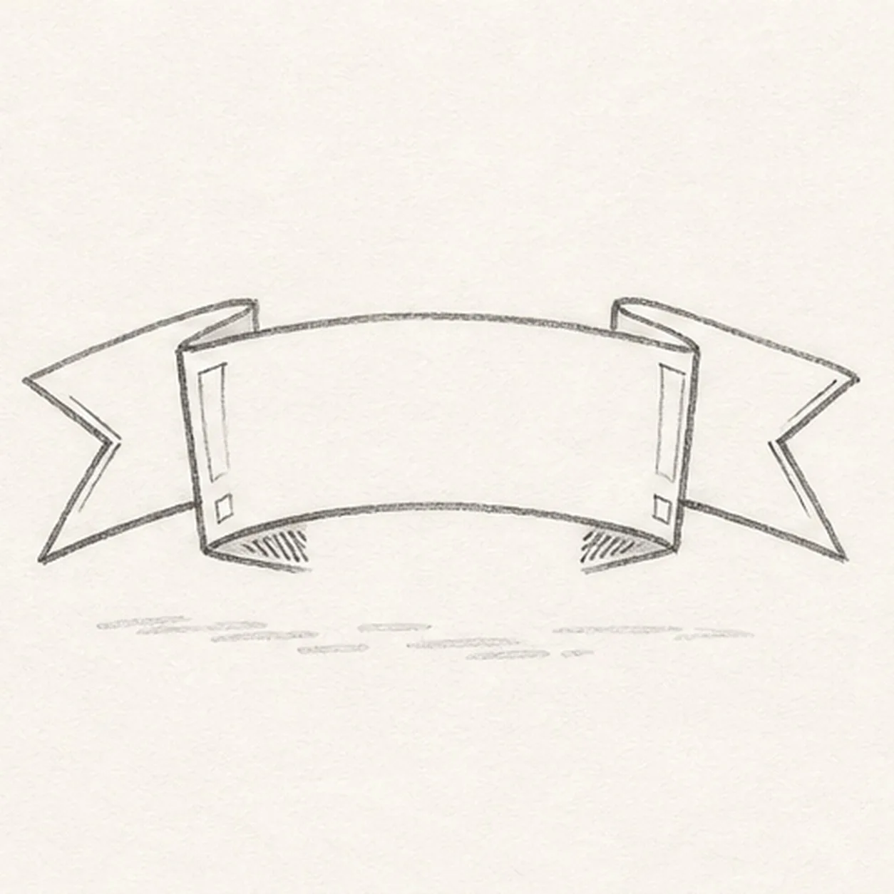
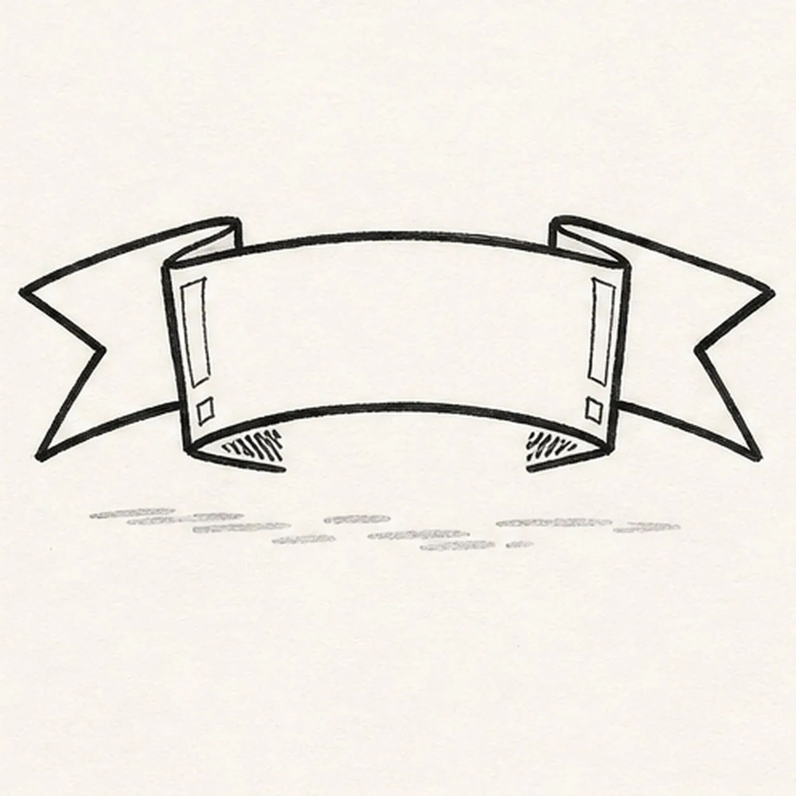
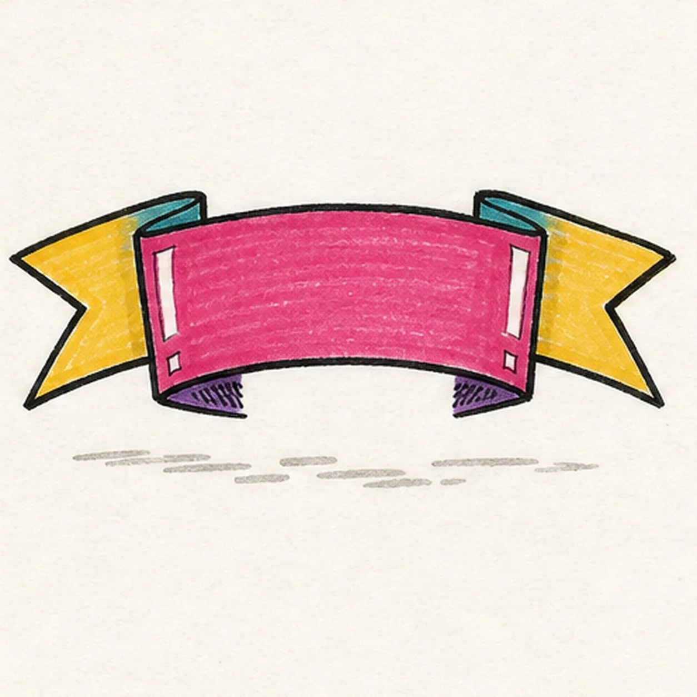

Marker ready?
Let's draw a folded banner ribbon
Treat this as one playful practice round: sketch the idea loosely, simplify the shapes, then commit with confident marker outlines and bright fills.
-
01

Map the ribbon folds
Draw a pale centerline and long curved front-panel box, then map two fold-return routes, two fishtail notch guides, and one shallow broken shadow footprint.
Marker tip: Ghost the top and bottom curves twice before drawing them. Compare the empty wedges between each return and tail so the two sides feel balanced without forcing ruler-perfect symmetry.
-
02

Shape the banner silhouette
Wrap the guides with one complete blank front panel, two folded-back return sections, and two notched fishtail ends.
Marker tip: Rotate the page for the long curves and pull each in one confident pass. Stop every tail line at the front panel instead of drawing finished detail underneath a section that will cover it.
-
03

Lock the overlaps
Add four visible overlap seams, the inner fold edges, two long open highlight gaps, two small corner glints, and three short shadow-hatch groups to the established ribbon.
Marker tip: At each side, trace the line that passes in front and leave a small paper gap before the return line. If you can cover the lower fold with a finger and still understand the front panel, the overlap is working.
-
04

Ink the folded edges
Thicken every established outside edge, seam, tail notch, and fold boundary with imperfect black felt-tip lines while preserving the blank center and all four white highlight shapes.
Marker tip: Let the inked side rest for a moment before rotating the page. Pull the marker toward yourself along each curve and vary pressure slightly so the outline feels lively rather than mechanically uniform.
-
05

Color each ribbon plane
Fill the established front panel raspberry, returns teal, tails golden yellow, fold shadows purple, and shallow ground shadow warm gray with directional marker strokes.
Marker tip: Work from each outside edge toward the center and keep the strokes following the ribbon curve. Leave the two long highlights and two corner glints as clean paper instead of trying to paint white over wet color.
-
06
Crisp up the banner
Reinforce selected keeper outlines, even the established marker fills, clarify the overlap seams and white highlights, and add only tiny dry-marker texture inside existing shapes.
Marker tip: Count one front panel, two returns, two tails, and four readable seams, then stop while the marker grain shows. Add your own lettering only after you can draw the blank fold structure cleanly; the ribbon itself is the lesson here.

![Handmade face-free marker drawing of one three-quarter birthday cake slice with a pointed rear tip, broad front face, visible side plane, exactly three soft-lavender sponge layers, exactly two mint-green filling bands, one raspberry-purple top frosting layer with exactly one front drip, one upright cream candle with exactly two tangerine diagonal bands, one golden-yellow flame, exactly six short colorful sprinkle marks, two vertical side paper highlights, one top frosting paper highlight, thick imperfect black outlines, visible marker streaks, and one shallow warm-gray oval shadow](assets/cartoon-birthday-cake-slice-finished-v1.webp)
![Handmade face-free marker drawing of one upright three-quarter soda can with a slightly tapered coral-red body, cool-gray top and bottom rims, one pull tab, one black can opening, one center rivet, two blank sweeping diagonal label bands in deep teal and pale butter, exactly five golden-yellow fizz bubbles rising in one curved arc, exactly three short black motion ticks, exactly two vertical warm-paper highlight gaps, thick imperfect black outlines, visible marker streaks, and one shallow warm-gray oval shadow](assets/cartoon-soda-can-with-fizz-finished-v1.webp)